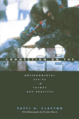

<body bgcolor="#FFFFFF" text="#000000" link="#0000FF" vlink="#CC0000" alink="#CC0000"><center><hr width="350" size="1" align="center" noshade>An extraordinary whale rescue that revealed a great deal about values and decision making and about how we think of ourselves as human beings<hr width="350" size="1" align="center" noshade><p><a href="https://cdcshoppingcart.uchicago.edu/Cart/ChicagoBook.aspx?ISBN=9781566396158&&PRESS=temple" target="_top">Buy this book!</a> | <a href="https://cdcshoppingcart.uchicago.edu/Cart/Cart.aspx?PRESS=temple" target="_top">View Cart</a> | <a href="https://cdcshoppingcart.uchicago.edu/Cart/Cart.aspx?PRESS=temple" target="_top">Check Out</a></p><p></p></center><!--none//--><h1>Connection on the Ice</h1>
<H2>Environmental Ethics in Theory and Practice</H2>
<H2><!-- With photographs by Charles Mason --></H2>
<h3>Patti H. Clayton, photographs by Charles Mason</h3>
<P>cloth 1-56639-615-8 $80.50, Jun 98, <FONT COLOR=#990033>Out of Stock Unavailable</FONT>
<br>paper 1-56639-616-6 $35.95, Jun 98, <FONT COLOR=#990033>Available</FONT>
<BR> 352 pp
6x9
2&nbsp;tables 16&nbsp;halftones
</P><p>On Friday, October 7, 1988, Roy Ahmaogak of Barrow, Alaska, discovered three young gray whales trapped in ice off the Arctic coast. The three-week rescue operation that followed cost more than a million dollars and grew to include the White House, the Soviet Union, the environmental community, Eskimo whalers, Alaskan oil companies, school children and journalists from around the world, the Alaska National Guard, and a host of other corporate, governmental, scientific, and individual participants. Some called it a non-event, a fiasco, an absurd waste of money, while others considered it the most extraordinary animal rescue effort ever undertaken. In any case, it is a story not likely to be forgotten.
<p>Both complex and moving, this story grounds Patti Clayton's overview of environmental ethics theory. Using the story as a touchstone for critical comparison, Clayton explores three major traditions of environmental philosophy: extensionism, ecofeminism's 'care' ethic, and Heideggerian Phenomenology. In doing so, she guides readers through the evolution and central concepts of each tradition, moving intriguingly between theory and the well-known rescue story as an apt illustration of the complexities of ethical deliberation.
<p>Clayton's critical thinking leads to a deeper appreciation of the ways in which different sets of assumptions yield unique interpretations of such issues. Readers have the opportunity to consider the implications of this environmental ethics issue as a microcosm of human-nonhuman interaction. The unifying narrative of the whale story, which is based on the commentary of participants and observers, provides both an engaging vehicle for the study of environmental ethics and a "real world" testament to the multifaceted nature of human-nonhuman relationships, encouraging readers to reflect on the connection of such incidents in their own lives.
<BR>&nbsp;<h2>Excerpt</h2><P>Excerpt available at <a href="http://www.temple.edu/tempress">www.temple.edu/tempress</a></p>
<BR>&nbsp;<h2>Contents</h2><P>
<p>Acknowledgments
<br>Introduction
<br>1. The Case Study: The Grays of October and Operation Breakout
<p><b>Part I: Philosophical Tradition I</b>
<br>2. The Tradition of Rationalism
<br>3. Whale Rescue Story I
<p><b>Part II: Philosophical Tradition II</b>
<br>4. The "Care" Tradition
<br>5. Whale Rescue Story II
<p><b>Part III: Philosophical Tradition III</b>
<br>6. The Phenomenological Tradition of Martin Heidegger
<br>7. Whale Rescue Story III
<p><b>Part IV: Conclusion</b>
<br>8. Recap and Reflection
<br>9. The Evolution of Moral Philosophy
<p>Appendix: Study Participants and Resources
<br>Notes
<br>Index
</P><BR>&nbsp;<H2>About the Author(s)</H2>
<P><B>Patti H. Clayton</B> is Visiting Lecturer in the Division of Multidisciplinary Studies at North Carolina State University.</P>
<BR><H2>Subject Categories</H2>
<p><A HREF="/tempress/nature.html" TARGET="_top">Nature and the Environment</a>
<BR><A HREF="/tempress/philosophy.html" TARGET="_top">Philosophy and Ethics</a>
</p>
<BR><h2 class="inpageheading">In the series</H2>
<P><I><a href="http://www.temple.edu/tempress/environmental.html" onMouseOver="window.status='Click for other books in this series!'; return true;" onMouseOut="window.status=''; return true;" target="_top">Environmental Ethics, Values, and Policy</a></i>, edited by Holmes Rolston III.
</p><p>No longer active.</p>
<p align="center"><a href="https://cdcshoppingcart.uchicago.edu/Cart/ChicagoBook.aspx?ISBN=9781566396158&&PRESS=temple" target="_top">Buy this book!</a> | <a href="https://cdcshoppingcart.uchicago.edu/Cart/Cart.aspx?PRESS=temple" target="_top">View Cart</a> | <a href="https://cdcshoppingcart.uchicago.edu/Cart/Cart.aspx?PRESS=temple" target="_top">Check Out</a></p><p><font face="Arial" size="1"><a href="copyright.html" onMouseOver="window.status='Web Copyright Policy';return true;" onMouseOut="window.status=''" title="Web Copyright Policy">&copy;</a> 2015 <a href="http://www.temple.edu" target="new" onMouseOver="window.status='Link to Temple University home page';return true;" onMouseOut="window.status=''" title="Link to Temple University home page">Temple University</a>. All Rights Reserved. http://www.temple.edu/tempress/titles/1372_reg.html</font></p>